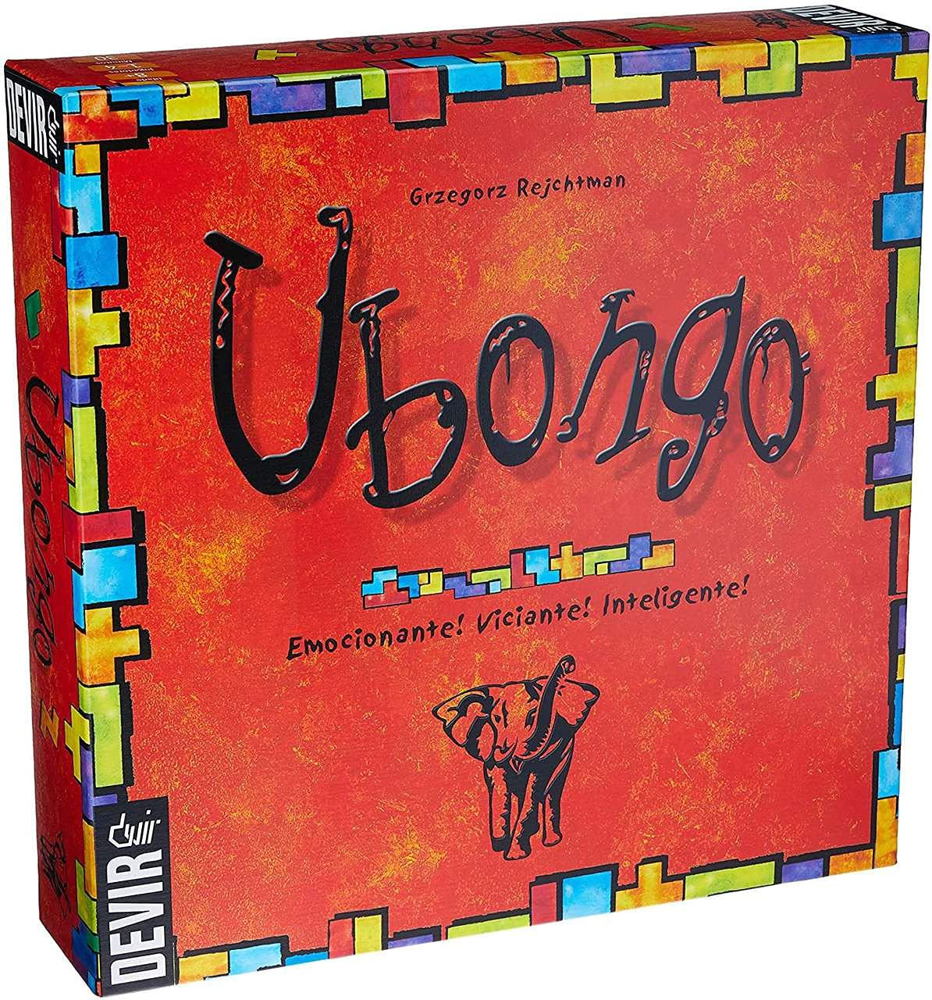
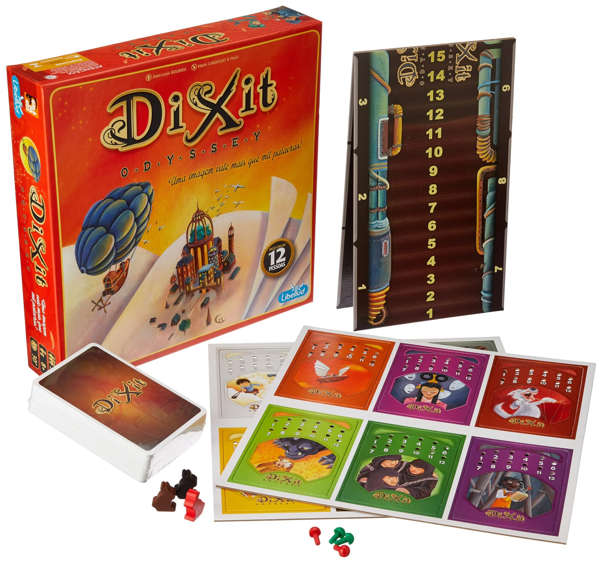
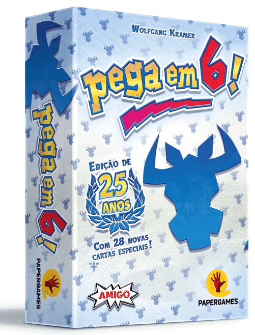
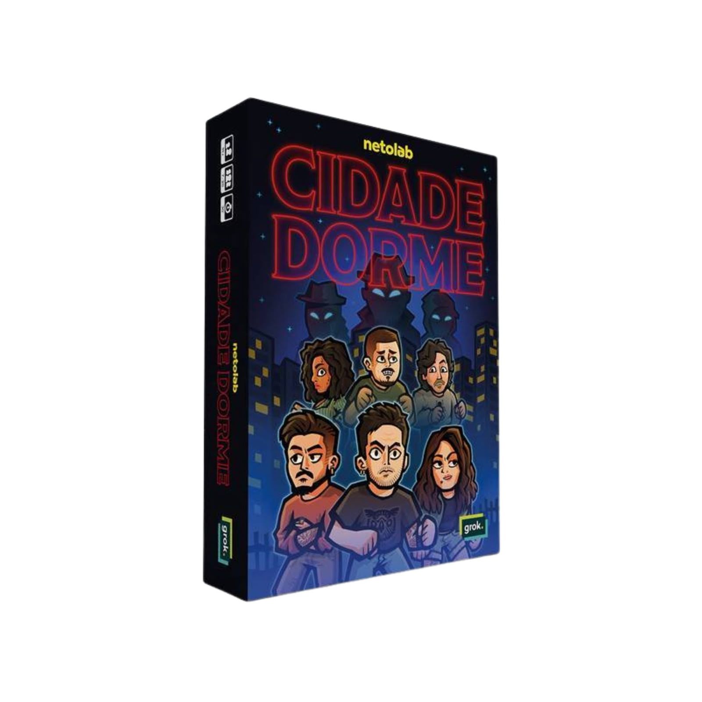

em detalhe
Mais do que disciplinas.
Uma formação objetiva, com espaço para segurança, inteligência artificial e o ritmo de quem estuda para concurso.
- Base técnica em ADS
- Segurança da Informação
- Inteligência Artificial
- Foco em concursos públicos
ADS · 2026
Sophia Oliveira
Portfólio acadêmico · Brasília · DF
Análise e Desenvolvimento de Sistemas
Estudante de Análise e Desenvolvimento de Sistemas
(1º Período)
Interessada na área de tecnologia, estou construindo uma base sólida para unir a programação ao meu grande objetivo: a aprovação em concursos públicos.
Conheça minha trajetóriaem detalhe
Uma formação objetiva, com espaço para segurança, inteligência artificial e o ritmo de quem estuda para concurso.
trajetória
01 — Por que ADS?
Escolhi Análise e Desenvolvimento de Sistemas pela possibilidade de entrar mais rápido no mercado de trabalho, já que meu principal objetivo é ser aprovada em um concurso público. Além disso, pretendo me aprofundar em Segurança da Informação. Também quero estudar mais sobre Inteligência Artificial, pois ela faz parte do presente e continuará evoluindo cada vez mais.
02 — Próximos passos
Nos próximos semestres, pretendo aprofundar meus conhecimentos em Bancos de Dados, Engenharia de Software e Segurança da Informação. Meu objetivo é construir uma boa base técnica que me prepare tanto para desenvolver soluções eficientes quanto para conquistar a aprovação em concursos públicos de nível superior ou na área de TI.
Entrada mais rápida no mercado e formação de nível superior alinhada à tecnologia.
Aprofundar a proteção de dados e o cuidado com sistemas confiáveis.
Estudar uma área que já faz parte do presente e segue evoluindo.
O objetivo central: aprovação em concurso de nível superior ou na área de TI.
agora
HTML · CSS · JavaScript
Lógica · Estruturas · Raciocínio
Entidades · Relações · Modelagem
Composição · Hierarquia · Detalhe
fora da tela
Gosto de reunir amigos e família ao redor de um tabuleiro. Toque em um jogo para ver como funciona.

Estratégia
Um quebra-cabeça contra o tempo: encaixe as peças antes que a ampulheta acabe.

Criatividade
Cartas ilustradas e dicas criativas: descubra qual imagem o narrador escolheu.

Estratégia
Jogue suas cartas com cuidado: a sexta da fila faz você levar todas.

Dedução social
À noite o assassino age; de dia, a cidade inteira tenta descobrir quem é.
dúvidas
Respostas rápidas sobre minha formação, metas de estudo e interesses na área de tecnologia.